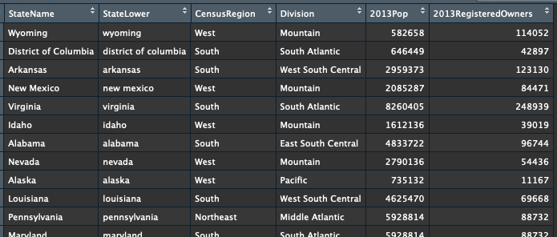
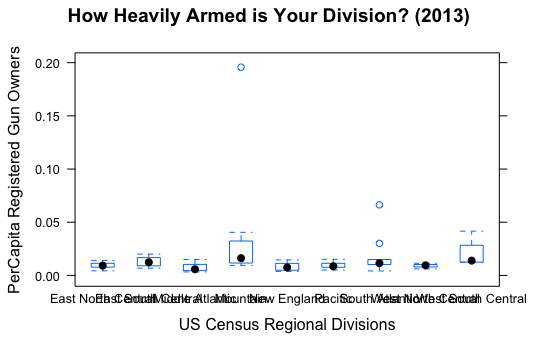

We will answer this question using R. First, load the dataset. It contains state names, census regions, census divisions, 2013 populations and the number of registered gun owners (also in 2013). This data comes to us from CBS News.
# Set working directory
setwd("~/Desktop")
# Load dataset
library(readxl)
Firearms_Data_KAD <- read_excel("~/Desktop/R/Per Capita Firearms Registered/Firearms_Data_KAD.xlsx")
View(Firearms_Data_KAD)
Next, let’s load all of the packages we’ll use for data transformations and visualizations.
# Load needed packages
library(ggplot2)
library(RColorBrewer)
library(lattice)
library(ggthemes)
library(maps)
library(dplyr)
library(sqldf)
library(choroplethr)Let’s do some basic analysis and create a preliminary boxplot.
# Add percentage value
Firearms_Data_KAD$Pct <- Firearms_Data_KAD$`2013RegisteredOwners`/Firearms_Data_KAD$`2013Pop`
# Add value for ordering bar charts
Firearms_Data_KAD$Order <- 1-Firearms_Data_KAD$Pct
# Box and whisker plot using Lattice
boxplot <- bwplot(Pct ~ Division, data=Firearms_Data_KAD,
xlab="US Census Regional Divisions",
ylab="PerCapita Registered Gun Owners",
main="How Heavily Armed is Your Division? (2013)")
boxplot
Next, let’s use ggplot2 and a Wall Street Journal Theme to make this easier on the eyes.
# Box and whisker plot using ggplot2
boxplot2 <- ggplot(Firearms_Data_KAD, aes(Division, Pct)) +
geom_boxplot() + ylab("PerCapita Registered Gun Owners") +
xlab("US Census Regional Divisions") +
labs(title="Division Owners")
boxplot2
boxplot2 + coord_flip() + theme_wsj()Now let’s step back a level of detail and see if there are similarities in Census Regions.
boxplot3 <- ggplot(Firearms_Data_KAD, aes(CensusRegion, Pct)) +
geom_boxplot() + ylab("PerCapita Registered Gun Owners") +
xlab("US Census Regions") +
labs(title="Regions")
boxplot3
boxplot3 + coord_flip() + theme_wsj()Next, let’s dive into state-level detail to see the outliers.
# Bar plot by state
# Order states
# states <- c("Wyoming", "District of Columbia", "Arkansas", "New Mexico", "Virginia", "Idaho", "Alabama", "Nevada", "Alaska", "Louisiana", "Pennsylvania", "Maryland", "New Hampshire", "Georgia", "Indiana", "Kentucky", "Utah", "Texas", "Oklahoma", "Colorado", "South Carolina", "South Dakota", "Ohio", "Oregon", "Connecticut", "Montana", "Tennessee", "North Carolina", "Kansas", "Florida", "Minnesota", "North Dakota", "Arizona", "West Virginia", "Illinois", "Maine", "Washington", "Missouri", "Wisconsin", "California", "Nebraska", "Mississippi", "Vermont", "Iowa", "New Jersey", "Hawaii", "Massachusetts", "Michigan", "Delaware", "Rhode Island", "New York")
Firearms_Data_KAD$StateName <- factor(Firearms_Data_KAD$StateName,
levels = Firearms_Data_KAD$StateName[order(Firearms_Data_KAD$Pct)])
Firearms_Data_KAD$StateName
# Bar plot by state
barplot <- qplot(StateName, data=Firearms_Data_KAD, geom="bar",
weight=Pct, ylab="PerCapita Registered Gun Owners")
barplot <- barplot + theme(axis.text.x = element_text(angle=90, hjust=1))
barplot
barplot + theme_wsj() + coord_flip()What does this look like on a map? Do we see any regional trends?
Firearms_Data_KAD$region <- Firearms_Data_KAD$StateLower
Firearms_Data_KAD$value <- Firearms_Data_KAD$Pct
map <- state_choropleth(
Firearms_Data_KAD,
legend = "Pct",
title = "PerCapita Registered Gun Owners (2013)",
num_colors = 1,
zoom = NULL)
map <- map + theme_map()
mapRather than looking at distributions or state-specific data, what is the average gun ownership rate for each region?
# Average by Region
regiondata <- sqldf("select distinct Division, sum(`2013Pop`) as Pop, sum(`2013RegisteredOwners`) as Owners from Firearms_Data_KAD group by Division")
head(regiondata)
regiondata$Pct <- regiondata$Owners/regiondata$Pop
head(regiondata)
regiondata$Division <- factor(regiondata$Division,
levels = regiondata$Division[order(regiondata$Pct)])
print(regiondata)
barplot2 <- qplot(Division, data=regiondata, geom="bar",
weight=Pct, ylab="PerCapita Registered Gun Owners")
barplot2 <- barplot2 + theme_wsj() + coord_flip()
barplot2However, don’t forget that the District of Columbia is #2